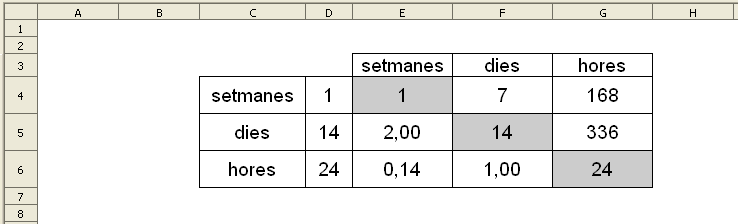
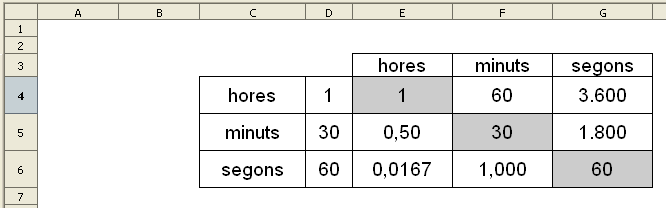
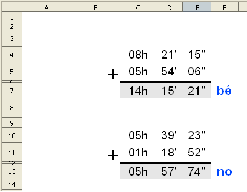
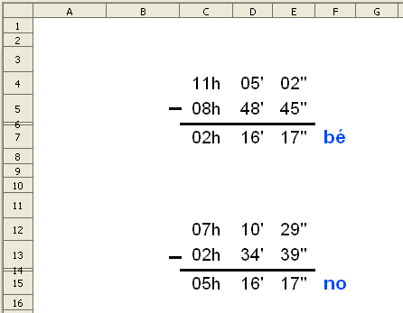

Operacions amb les unitats de temps
En aquesta pràctica es faran les següents activitats:
-
Una taula de conversió d'anys, mesos, setmanes i dies.
-
Una taula de conversió de dies, hores, minuts i segons.
-
Operacions de sumar, restar i multiplicar amb hores, minuts i segons.
Taula de conversió de setmanes, dies i hores.
Presentació gràfica de l'activitat

Operadors que es fan servir en aquesta activitat
-
Operadors de multiplicar (*)
-
Operadors de dividir (/)
Objectiu de l'activitat
Fer una taula de conversió de unitats de temps.
Desenvolupametn de l'activitat
1. Obrir el fitxer M2 i afegir un nou full amb el nom de M2P4 SDH.
2. Formatar les cel·les del rang C3:G6 amb els següents atributs:
-
tipus de lletra: arial
-
tipografia: normal
-
mida: 14
-
amplada de les columnes de les celes del rang C3:G6: la que convingui
-
el valor de la cel·la E5 mostra dos decimals
-
el valor de la cel·la E6 mostra dos decimals
-
el valor de la cel·la F6 mostra dos decimals
3. Escriure a la cel·la E3: setmanes
4. Escriure a la cel·la F3: dies
5. Escriure a la cel·la G3: hores
6. Escriure a la cel·la C4: setmanes
7. Escriure a la cel·la C5: dies
8. Escriure a la cel·la C6: hores
9. Escriure números a les cel·les del rang D4:D6.
10. Escriure a la cel·la E4: =D4
11. Escriure a la cel·la F4: =E4*7
12. Escriure a la cel·la G4: =F4*24
13. Escriure a la cel·la E5: =D5/7
14. Escriure a la cel·la F5: = D5
15. Escriure a la cel·la G5: = D5*24
16. Escriure a la cel·la E6: =D6/168
17. Escriure a la cel·la F6: =D6/24
18. Escriure a la cel·la G6: =D6
19. Protegir les cel·les que convingui.
19. Comprovar que funcioni correctament l'activitat.
20. Desar el fitxer M2
Taula de conversió d'hores, minuts i segons.
Presentació gràfica de l'activitat

Operadors que es fan servir en aquesta activitat
-
Operadors de multiplicar (*)
-
Operadors de dividir (/)
Objectiu de l'activitat
Fer una taula de conversió de unitats de temps.
Desenvolupametn de l'activitat
1. Obrir el fitxer M2 i afegir un nou full amb el nom de M2P4 HMS.
2. Formatar les cel·les del rang C3:G6 amb els següents atributs:
-
tipus de lletra: arial
-
tipografia: normal
-
mida: 14
-
amplada de les columnes de les celes del rang C3:G6: la que convingui
-
el valor de la cel·la E5 mostra dos decimals
-
el valor de la cel·la E6 mostra quatre decimals
-
el valor de la cel·la F6 mostra tres decimals
3. Escriure a la cel·la E3: hores
4. Escriure a la cel·la F3: minuts
5. Escriure a la cel·la G3: segons
6. Escriure a la cel·la C4: hores
7. Escriure a la cel·la C5: minuts
8. Escriure a la cel·la C6: segons
9. Escriure a les cel·les del rang D4:D6 el números que vulgueu.
10. Escriure a la cel·la E4: =D4
11. Escriure a la cel·la F4: =D4*60
12. Escriure a la cel·la G4: =D4*3600
13. Escriure a la cel·la E5: =D5/60
14. Escriure a la cel·la F5: =D5
15. Escriure a la cel·la G5: =D5*60
16. Escriure a la cel·la E6: =D6/3600
17. Escriure a la cel·la F6: =D6/60
18. Escriure a la cel·la G6: =D6
19. Protegir les cel·les que convingui.
20. Comprovar que funcioni correctament l'activitat.
21. Desar el fitxer M2
Operacions de sumar amb unitats de temps
Presentació gràfica de l'activitat

Funcions que es fan servir en aquesta activitat
-
Operador de sumar (+)
Objectiu de l'activitat
Fer sumes amb unitats de temps.
Desenvolupametn de l'activitat
1. Obrir el fitxer M2 i afegir un nou full amb el nom de M2P4 sumar unitats de temps.
2.Formatar les cel·les del rang C4:F7 amb els següents atributs:
-
tipus de lletra: arial
-
tipografia: normal
-
mida: 20
3. Escriure a la cel·la C4: =SI($A$1=0;ALEATENTRE(1;9))
4. Escriure a la cel·la D4: =SI($A$1=0;ALEATENTRE(1;59))
5. Escriure a la cel·la E4: =SI($A$1=0;ALEATENTRE(1;59))
6. Escriure a la cel·la C5: =ALEATENTRE(0;C4-1)
7. Escriure a la cel·la D5: =SI($A$1=0;ALEATENTRE(1;59))
8. Escriure a la cel·la E5: =SI($A$1=0;ALEATENTRE(1;59))
Per accedir al codi de format de la cel·la, demaneu Format | Cel·les | clic a la solapa nombres i escriure el codi de format que convingui dintre de la finestreta de codi de format. En el nostre cas els codis de format serien:
#"h" (per a les hores)
#"'" (per als minuts)
#"''" (per als segons)
Si es vol més informació sobre codis de format, accedir a l'ajuda de El LibreOffice Calc (tecla F1) i fer clic a la solapa Índex per a després escriure: codis de format;nombres a la finestreta de Cerca terme. Despres fer doble clic a la paraula que apareix seleccionada: "nombres".
9. Formatar l'alçada de la fila 6 a 1 mm
10. Fer que el color de fons de les cel·les del rang C6:E6 sigui negre.
11. Escriure el signe de sumar (+) a la cel·la B5.
12. Escriure a la cel·la I4: =HORADEC(C4;D4;E4)
14. Escriure a la cel·la I7: =I4+I5
15. Escriure a la cel·la H7: =HORADEC(C7;D7;E7)
16. Amagar les columnes H i I
17. Escriure a la cel·la F7: =SI(O(C7="";D7="";E7="");"";SI(EXACTE(H7;I7);"bé";"no"))
18. Protegir les cel·les que convingui.
19. Ocultar les cel·les que convingui.
20. Comprovar que funcioni correctament l'activitat.
21. Desar el fitxer M2
Operacions de restar amb unitats de temps
Presentació gràfica de l'activitat

Funcions que es fan servir en aquesta activitat
-
Operador de restar (-)
Objectiu de l'activitat
Fer restes amb unitats de temps.
Desenvolupametn de l'activitat
1. Obrir el fitxer M2 i afegir un nou full amb el nom de M2P4 restar unitats de temps.
2. Formatar les cel·les del rang C4:F7 amb els següents atributs:
-
tipus de lletra: arial
-
tipografia: normal
-
mida: 20
3. Escriure a la cel·la C4: =SI($A$1=0;ALEATENTRE(1;9))
4. Escriure a la cel·la D4: =SI($A$1=0;ALEATENTRE(1;59))
5. Escriure a la cel·la E4: =SI($A$1=0;ALEATENTRE(1;59))
6. Escriure a la cel·la C5: =ALEATENTRE(0;C4-1)
8. Escriure a la cel·la E5: =SI($A$1=0;ALEATENTRE(1;59))
9. Formatar l'alçada de la fila 6 a 1 mm i fer que el fons de les cel·les del rang C6:E6 sigui de color.
10. Escriure el signe de restar (-) a la cel·la B5
11. Escriure a la cel·la I4: =HORADEC(C4;D4;E4)
12. Escriure a la cel·la I5: =HORADEC(C5;D5;E5)
13. Escriure a la cel·la I7: =I4-I5
14. Escriure a la cel·la H7: =HORADEC(C7;D7;E7)
15. Escriure a la cel·la F7: =SI(O(C7="";D7="";E7="");"";SI(EXACTE(H7;I7);"bé";"no"))
16. Protegir les cel·les que convingui.
17. Ocultar les les cel·les que convingui.
18. Comprovar que funcioni correctament l'activitat.
19. Desar el fitxer M2
|
|

|
|
|